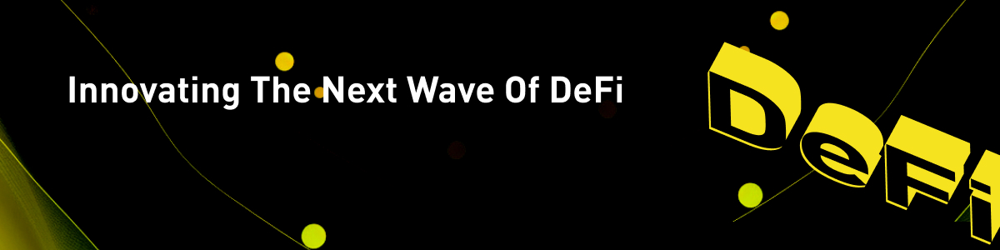
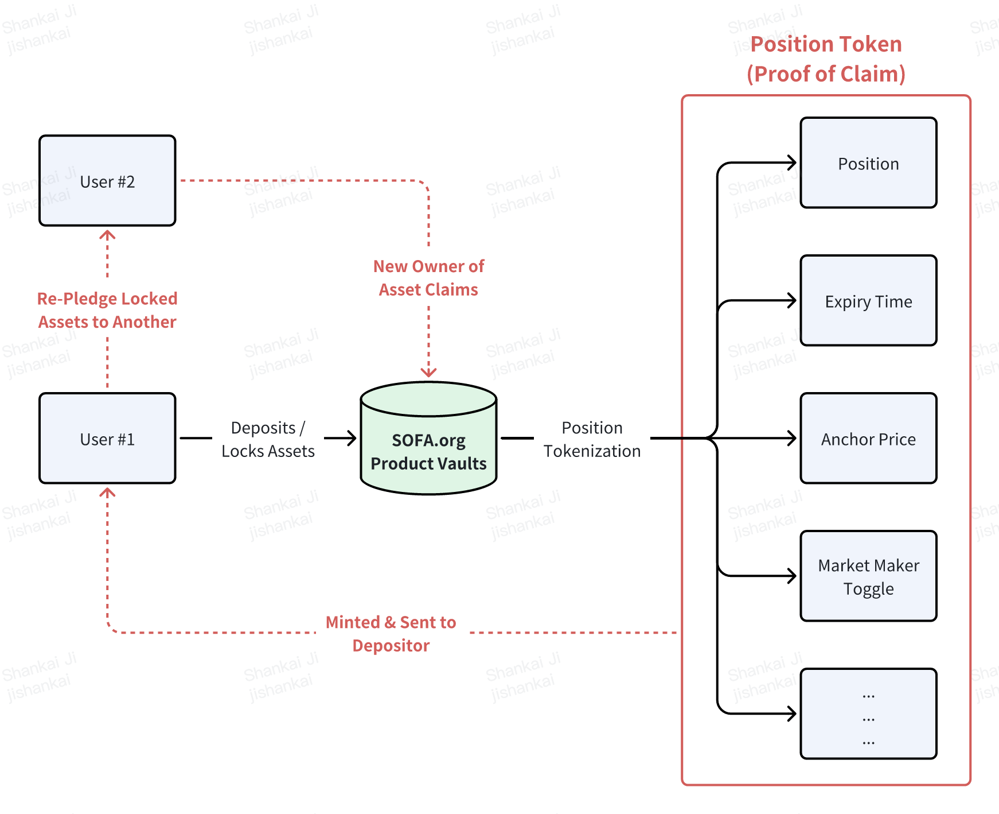

Innovation der nächsten Welle von DeFi
Gegenparteiausfälle erinnerten eindringlich an die Bedeutung der Dezentralisierung
2022 brachte eine harte Realität für Krypto mit sich, als das Aus von Genesis, Celsius, 3AC und FTX den Kern unseres Ökosystems erschütterte und uns an die Bedeutung der Dezentralisierung erinnerte, die viele von uns in unserem Streben nach Gewinnen vergessen hatten. Die traditionelle Finanzwelt erlebte ein ähnliches Erwachen mit dem Zusammenbruch von Lehman, wo eine Kette von (überverschuldeten) Gegenparteiausfällen das globale Finanzsystem beinahe zum Einsturz brachte.
Infolgedessen gesetzte die Ära nach der Finanzkrise den Einsatz von zentralisierten Clearinghäusern und Tri-Party-Clearing-Vereinbarungen in Kraft, wodurch das Risiko der Vermögensverwahrung effektiv segregiert und in gut finanzierte (und stark regulierte) Drittparteien konzentriert wurde. Die Aufsichtsbehörden hatten entschieden, dass es sicherer und effizienter sei, die Risiken von Sicherheiten innerhalb fokussierter Kontaktpunkte zu verwalten und zu verhindern, dass schlechte Akteure mit der Bilanzverwaltung „schnell und nachlässig“ umgehen.
Spulen wir ins Heute vor: Stellen Sie sich vor, die Welt hätte eine weit verbreitete technologische Lösung, die unveränderliche Datenaufzeichnungen, nachverfolgbare Transaktionen, definierbare Parameter, operationale Transparenz und außergewöhnliche Netzwerksicherheit bietet; sicherlich würde eine solche Technologie die ideale Lösung für ein globales Abwicklungslager bieten, oder?
Den 'Trustless'-Geist als Kernwert der Blockchain neu entfachen
Dezentralisierung. Transparenz. Unveränderlichkeit. Erweiterbarkeit. Authentizität. Dies sind einige der häufigsten Begriffe, die oft als die Hauptvorteile der Blockchain genannt werden. Wir sind jedoch der Meinung, dass 'Trustless' die beste Personifizierung der Kernwerte von Krypto bietet, da die Blockchain es vollständigen Fremden ermöglicht hat, gültige Transaktionen ohne die Abhängigkeit von willkürlichen Mittelsmännern oder privilegierten Gruppen durchzuführen.
Darüber hinaus ermöglicht die Unveränderlichkeit von Smart Contracts, dass man sein absolutes Vertrauen in den Code anstelle des Wohlwollens seiner Gegenpartei setzen kann. Daher beruht das Fundament des Vertrauens auf den unverzichtbaren Säulen 1) der Unveränderlichkeit von Verträgen und 2) der On-Chain-Vermögensabwicklung. Diese Kernprinzipien werden unsere treibende Kraft bei der Entwicklung eines Protokolls sein, das wirklich frei von den Fesseln der Zentralisierung ist.
Es sollte jedoch klar sein, dass der Geist der Dezentralisierung darauf abzielen sollte, den Zugang und die Teilnahme der Benutzer zu fördern, anstatt Verantwortung in einer extremen Form finanzieller Anarchie abzulehnen. Während Blockchain-Transaktionen anonym sein könnten, gibt es normalerweise immer noch einen sozialen Menschen am anderen Ende Ihrer Transaktion, den wir mit Respekt behandeln sollten.
Die Entwicklung der kollektiven SOFA-Protokolle ist unser Versuch, den Geist der vertrauenslosen Dezentralisierung zu fördern, aber es ist ebenso wichtig für uns, eine Reihe von 'Best Practices'-Richtlinien festzulegen, um die professionelle Verantwortung aufrechtzuerhalten, auch wenn sie selbst auferlegt oder selbstreguliert sind. Jeder Teil unseres Protokolldesigns, einschließlich der Transparenz von Verträgen, der Klassifizierung von Tresoren und der fairen Tokenomics, zeigt unseren Willen und unser Engagement, ein verantwortungsbewussteres DeFi aufzubauen. Durch das Führen mit gutem Beispiel hoffen wir, der Welt zu zeigen, dass es einen besseren Weg nach vorne gibt, wobei die vertrauenslose Dezentralisierung ein entscheidender Grundpfeiler dieser Zukunft ist.
Risikotokenisierung
Im Kern sind finanzielle Instrumente letztlich nichts anderes als monetäre Verträge gegen eine Gegenpartei über bestimmte Zahlungs- und Eigentumsansprüche. Sie unterliegen verschiedenen menschengemachten (& zentralisierten) Regulierungsstufen und werden rechtlich durch physische und elektronische Dokumente festgehalten. Es ist nicht überraschend, dass wir viele der vorhergehenden Begriffe durch "digital" und "Blockchain-Ledger" ersetzen können, ohne die Essenz ihrer Bedeutungen zu verlieren.
Krypto hat enorme Fortschritte im Bereich der On-Chain-Sicherheit, 'Code ist Gesetz'-Smart-Contract-Rahmen, übertragbare digitale Währungen und Tokenisierung von RWAs gemacht. Wir gehen den letzten Punkt mit unseren innovativen Produkt-Tresoren einen Schritt weiter, wo wir nicht nur den nominalen Betrag aufzeichnen, sondern auch andere wichtige Parameter von Instrumenten On-Chain transkribieren, sodass sie authentisch repliziert und in einem Prozess, den wir Risikotokenisierung nennen, referenziert werden können. Das resultierende Ergebnis wird in etwas enthalten sein, das 'Position Tokens' genannt wird, die als Eigentumsansprüche auf on-chain-gesperrte Vermögenswerte betrachtet werden können, aber wie Standard-ERC-20-Token frei zwischen Benutzern übertragen werden können.

Ein nachhaltiges Tokenomics-Modell mit nutzungsbasierten Belohnungen
Schau, Geld bringt die Welt zum Drehen, und die Maximierung des Eigeninteresses als stabiler Gleichgewichtszustand ist eine treibende Kraft hinter DeFi. In der vergangenen Phase haben wir jedoch eine Reihe von (sehr) hochkarätigen Misserfolgen einst vielversprechender Projekte aufgrund schlecht konstruierter Tokenomics gesehen. Ob es nun an Exit-Liquiditätsdumpings (durch Insider & VCs), ausgefallenen inflationsbedingten Experimenten, preisreflexiven Nachfragemodellen oder einem übermäßigen Fokus auf kurzfristige Gewinne liegt, es gibt noch viel zu tun, um ein nachhaltigeres monetäres Modell zu fördern.
Als Antwort wird SOFA.org ein 100% faires Tokenomics-Modell einführen, mit einem deflationären Utility-Token mit fester Versorgung, der nur durch die Nutzung des Protokolls verdient werden kann. Darüber hinaus werden alle Protokolleinnahmen für tägliche Token-Burn-Operationen verwendet, um sicherzustellen, dass alle Gewinne direkt in die Taschen unserer Kernbenutzer und Hodler zurückfließen. Langfristig wird der Tokenpreis eine grundlegende Darstellung dafür sein, wie viel (Abwicklungs-)Wert unsere Protokolle zum Ökosystem beigetragen haben. 'Trade to Earn', jemand?
Dezentrale Abwicklung als neue Abwicklungsgrundlage
Mit der Weisheit, die wir aus der vergangenen Phase gewonnen haben, sprechen wir direkt einige der strukturellen Mängel in DeFi an, während wir an seinen Schlüsselinnovationen iterieren. Insbesondere ist die Schaffung der dezentralen Clearing-Tresore von SOFA.org unser ehrgeiziger Versuch, Standards dafür zu etablieren, wie finanzielle Vermögenswerte atomar On-Chain abgerechnet werden können, während gleichzeitig die Liquidität des DeFi-Kapitals durch übertragbare Position Tokens katalysiert wird.
Durch die direkte Aufzeichnung relevanter Instrumentendetails im Smart Contract können wir nicht nur diese Vermögenswerte on-chain abwickeln, sondern das Protokoll kann auch passende Position Tokens als definitiven digitalen Anspruchsnachweis prägen. Darüber hinaus können diese Position Tokens als sichere Sicherheiten an andere DeFi-Protokolle und sogar CeFi-Plattformen verpfändet werden, was die Kapitalgeschwindigkeit im gesamten Ökosystem erheblich steigert. Schließlich haben wir durch unsere gründlich gestalteten DeFi-Vaults als sichere, transparente und 'neutrale' Abwicklungsoption auf der Blockchain die Bedenken hinsichtlich der Verwahrung von Vermögenswerten bei Krypto-Intermediären beseitigt, sodass die Benutzer sich vollständig darauf konzentrieren können, Rendite auf das Kapital anstelle von Rückflüssen des Kapitals zu erzielen.